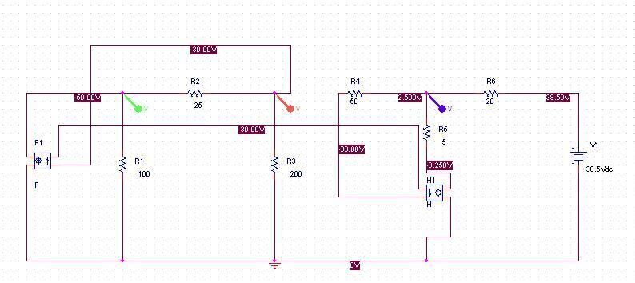
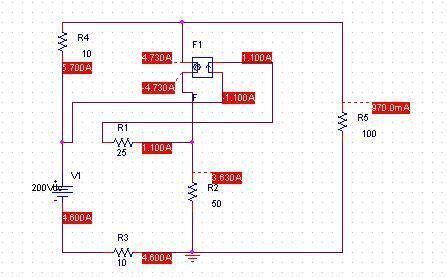

· EEM201
EEM201 Devre Teorisi I: Bağımlı Kaynaklarla PSpice Laboratuvar Ödevi
EEM201 – Devre Teorisi I · 07.10.2015 · 18.10.2026
Başkent Üniversitesi EEM201 Laboratuvar PSpice Ödevi-1, Yrd. Doç. Dr. Aysel Şafak ve Öğr. Gör. Baran Uslu imzalı soru sayfası ile bir arkadaşın benzetim dosyaları. Soru sayfası görüntüden metne aktarıldı; kendisi yayımlanmadı. Dosyalar EEM211 klasöründe bulunsa da başlık açıkça EEM201'i gösterdiği için Devre Teorisi I altında arşivlendi. Belgenin üzerinde tarih yok; 7 Ekim 2015 dosya tarihi kullanıldı. Kişisel bilgilerden arındırılmış devreler ve ekran görüntüleri yazının sonunda indirilebilir.
Ödevin yönergesi
Verilen iki devreyi PSpice ile kurup çalıştırın. Elde ettiğiniz sonuçları teorik, yani hesapla bulunan sonuçlarla karşılaştırın. Her soru 50 puandır.
1. Düğüm gerilim yöntemi
İlk devrede V1, V2 ve V3 düğüm gerilimleri istenir. V1–V2 arasında 25 Ω, V2–V3 arasında 50 Ω, V3 ile 38,5 V kaynak arasında 20 Ω vardır. V1'in toprağa direnci 100 Ω, V2'ninki 200 Ω'dur. V3 kolunda 5 Ω direnç ile 5i₀ bağımlı gerilim kaynağı seri bağlıdır. Sol bağımlı akım kaynağı 2i₀ değerindedir; i₀, 50 Ω direncinde V2'den V3'e doğru tanımlıdır.
PSpice ekranında V1=−50 V, V2=−30 V ve V3=2,5 V görülür. Kontrol hesabı:
- i₀=(V2−V3)/50=−0,65 A.
- Bağımlı gerilim 5i₀=−3,25 V.
- V1 düğümünde V1/100+(V1−V2)/25−2i₀=−0,5−0,8+1,3=0.
- V2 düğümünde V2/200+(V2−V1)/25+i₀=−0,15+0,8−0,65=0.
- V3 düğümünde (V3−V2)/50+(V3−38,5)/20+(V3−5i₀)/5=0,65−1,8+1,15=0.
Not: Bu düğüm eşitlikleri ekran sonuçlarını doğrulamak için arşiv aktarımı sırasında hesaplandı.

2. Ağ akım yöntemi
İkinci devrede bütün kol akımlarının ağ akım yöntemiyle bulunması ve PSpice ile karşılaştırılması istenir. Devrede 200 V kaynak, iki adet 10 Ω, 25 Ω, 50 Ω ve 100 Ω direnç ile 4,3iₐ bağımlı akım kaynağı vardır. iₐ, 25 Ω kolundaki akımdır.
Ekran görüntüsündeki akım büyüklükleri:
| Kol | Akım |
|---|---|
| 25 Ω | 1,100 A |
| Bağımlı kaynak | 4,730 A |
| 50 Ω | 3,630 A |
| 100 Ω | 970,0 mA |
| Üstteki 10 Ω | 5,700 A |
| Alttaki 10 Ω ve 200 V kaynak | 4,600 A |
4,3×1,100=4,730 A bağımlı kaynak değeriyle; 4,730−1,100=3,630 A orta kol akımıyla; 4,730+0,970=5,700 A üst direnç akımıyla uyumludur. Yönler kaynak ekranındaki ok ve işaretlerle birlikte okunmalıdır.

İndirme içeriği
İki OrCAD/PSpice DSN devresi ve üç ekran görüntüsü vardır. Devre dosyalarının içinde kalan kişisel dosya adları aynı uzunlukta nötr adlarla değiştirildi. Kaynaklar bu ortamda çalıştırılmadı; yukarıdaki kontroller kaydedilmiş sonuçlara dayanır.